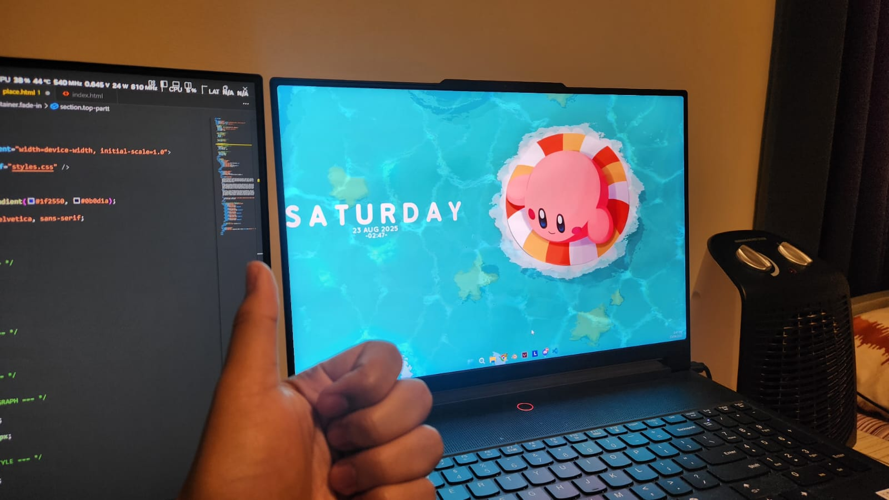

My laptop
Honestly, at first I didn’t really know what my favorite thing was. I kept thinking about it and nothing came to mind right away. But then I realized that my favorite thing is actually something I use every single day without even noticing how important it is, which is my laptop. It sounds simple, but when I think about it, my laptop is the one thing that I can’t really live without.
My laptop is basically the center of everything I do. First of all, it’s for studying. I use it to open lecture slides, read notes, and search for extra materials online. Whenever I have assignments, I do everything on my laptop, whether it’s writing essays, making presentations, or working on group projects with classmates. I also spend a lot of time on YouTube. Sometimes I watch tutorials to learn new things, and other times I just watch random videos to relax and pass the time.
Of course, it’s not all about school. My laptop is also what I use to have fun. I play games when I’m bored, watch movies when I want to chill, and listen to music whenever I need a break. On top of that, I sometimes use it for personal projects, like editing videos, trying out coding, or just experimenting with creative ideas. It feels like one device that can handle everything I need in a day, from being productive to simply relaxing.
If you want to know more about my laptop, go ahead
My laptop ❤️